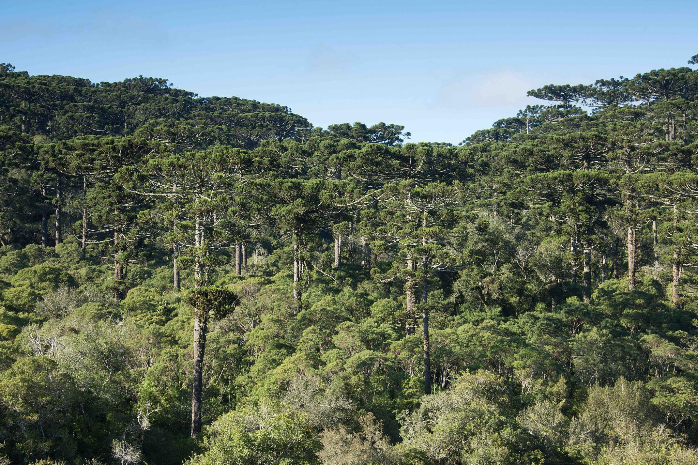
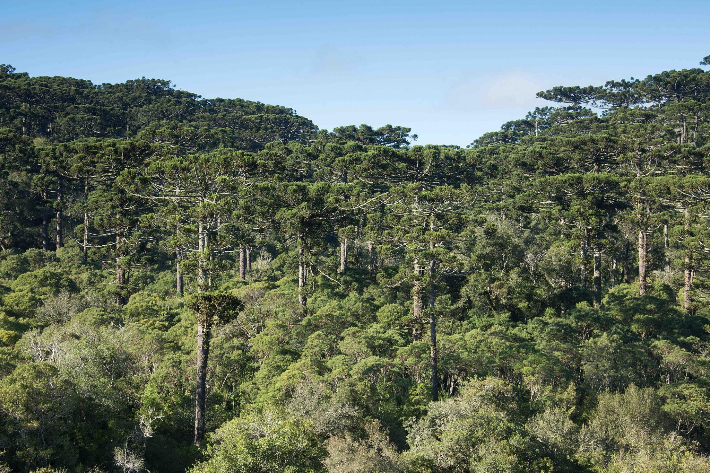
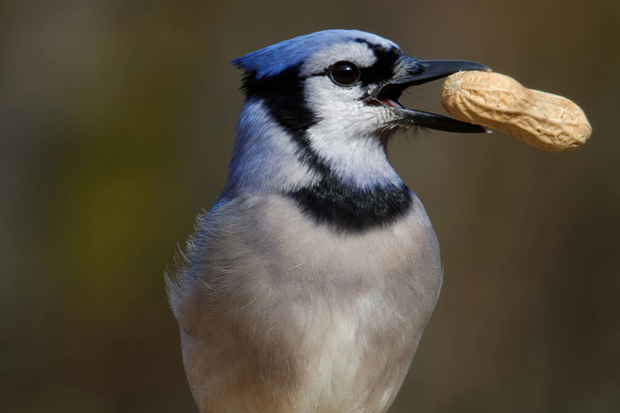
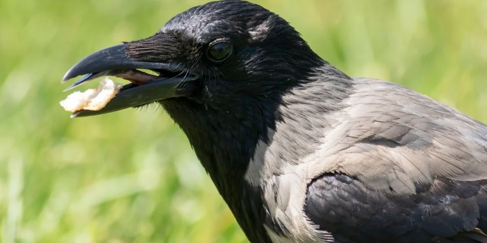
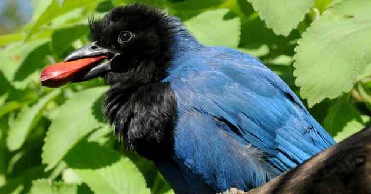

Espécies:
Gaio-Azul
Além de sua beleza estonteante, o gaio azul é reconhecido por sua inteligência excepcional. Essas aves são capazes de se adaptar a uma variedade de ambientes, desde florestas exuberantes até áreas urbanas. Sua sociabilidade e habilidade de se comunicar entre si por meio de uma variedade de chamados e cantos os tornam uma presença marcante na paisagem sonora das áreas onde vivem.
Os gaios azuis são conhecidos por sua curiosidade e comportamento travesso. Eles são frequentemente vistos explorando seu ambiente em busca de alimento e entretenimento, e são famosos por sua capacidade de armazenar comida em locais escondidos para consumo posterior, um comportamento conhecido como "caching".
Além disso, o gaio azul desempenha um papel importante nos ecossistemas em que vive, ajudando a controlar populações de insetos e dispersar sementes.
No geral, o gaio azul é uma espécie fascinante e uma alegria para se observar na natureza. Sua beleza, inteligência e comportamento intrigante o tornam um símbolo da vida selvagem na América do Norte e um favorito entre observadores de aves e amantes da natureza.
Corvo
Em muitas tradições, o corvo é considerado um símbolo de inteligência e sabedoria. Sua habilidade de resolver problemas complexos e sua memória notável o transformam em uma figura venerada em algumas culturas, onde é visto como um guia espiritual ou um mensageiro entre os mundos.
Além disso, o corvo muitas vezes é retratado como um ser misterioso e até mesmo sobrenatural. Em algumas lendas e contos, ele é associado à magia, à morte ou ao desconhecido, evocando uma aura de mistério e intriga.
Apesar de seu simbolismo variado, uma coisa é certa: o corvo exerce uma influência duradoura sobre a imaginação humana. Sua presença marcante na natureza e sua conexão com a cultura ao longo da história o tornam uma figura fascinante e enigmática, inspirando histórias, obras de arte e reflexões sobre o mundo natural e além.
Gralha-Azul
Além de sua beleza visual, a gralha-azul é conhecida por sua vocalização distintiva. Seus chamados são variados e complexos, usados para comunicação entre os membros do grupo e para alertar sobre possíveis perigos. Essas aves são altamente sociais e geralmente vivem em grupos familiares coesos, onde compartilham alimentos e se protegem mutuamente.
A gralha-azul também é reconhecida por sua inteligência notável. Ela é capaz de resolver problemas simples e adaptar seu comportamento às mudanças em seu ambiente. Sua curiosidade natural frequentemente a leva a explorar seu território em busca de alimento e oportunidades de interação.
Além disso, a gralha-azul desempenha um papel importante na dispersão de sementes e no controle de populações de insetos, contribuindo para a saúde dos ecossistemas em que vive.
No geral, a gralha-azul é uma ave fascinante e encantadora, cuja presença adiciona cor e vitalidade aos ambientes naturais em que habita. Sua beleza, inteligência e comportamento social a tornam uma figura emblemática da fauna sul-americana.
Habitats
O gaio azul é uma ave nativa da América do Norte e é encontrada em uma variedade de habitats, desde florestas temperadas e mistas até áreas urbanas e suburbanas. Essas aves são especialmente comuns em regiões de florestas decíduas e mistas, onde podem encontrar uma abundância de árvores para se abrigarem e se alimentarem. No entanto, também são adaptáveis e podem ser encontradas em habitats mais abertos, como bosques de pinheiros e áreas arborizadas próximas a rios e lagos.
O corvo, por outro lado, é uma espécie altamente adaptável que pode ser encontrada em uma ampla variedade de habitats em todo o mundo. Eles são comumente encontrados em áreas florestais, tanto em florestas temperadas quanto boreais, mas também podem ser encontrados em áreas urbanas, montanhas, desertos e até mesmo no Ártico. Sua capacidade de se adaptar a diferentes ambientes é um dos fatores que contribuem para sua distribuição global ampla e bem-sucedida.
Quanto à gralha-azul, ela é encontrada em partes da América do Sul, incluindo o Brasil, e habita principalmente florestas tropicais e subtropicais. Ela pode ser encontrada em uma variedade de ambientes florestais, desde florestas primárias densas até áreas de transição e clareiras. As gralhas-azuis também são conhecidas por serem encontradas em áreas urbanas e suburbanas, especialmente onde há fragmentos de floresta ou áreas arborizadas. Sua capacidade de adaptar-se a habitats perturbados pelo homem contribui para sua presença em uma variedade de paisagens.
 

Alimentação
O gaio azul é uma ave onívora, o que significa que sua dieta é bastante variada. Eles se alimentam principalmente de frutas, sementes, insetos e pequenos vertebrados, como lagartos e roedores. Além disso, são conhecidos por armazenar comida em locais escondidos para consumo posterior, um comportamento chamado de "caching". Essa estratégia de armazenamento de alimentos é particularmente útil durante os meses de escassez, garantindo que tenham acesso a comida quando necessário.
Os corvos têm uma dieta ampla e variada, o que os torna extremamente adaptáveis em termos de alimentação. Eles são onívoros e se alimentam de uma variedade de alimentos, incluindo frutas, sementes, insetos, pequenos mamíferos, ovos de outras aves e até mesmo carniça. Essa versatilidade na dieta permite que os corvos prosperem em uma variedade de ambientes, desde florestas até áreas urbanas, onde podem encontrar alimentos facilmente disponíveis.
A gralha-azul é uma ave onívora, alimentando-se de uma variedade de alimentos em seu ambiente. Sua dieta inclui frutas, sementes, insetos, larvas, pequenos vertebrados e até mesmo ovos de outras aves. Além disso, são conhecidas por aproveitar oportunidades alimentares em áreas urbanas, onde podem se alimentar de restos de comida humana. Sua flexibilidade na alimentação contribui para sua capacidade de sobreviver em uma variedade de habitats.
- 

